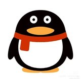

拾光论坛
首页
历史浏览
帖子
动态
该用户还没有发布过帖子
TA 的主页还在慢慢充实中
网
网络猫知道
2026-9-16
研究发现：把手机放在枕头旁边，睡眠时间会变短，因为会忍不住玩。
回复
网
网络猫知道
2026-9-30
你好我是小编，如果见到了我记得跟我打招呼呀！
回复
×
点击空白处 / 按 Esc 关闭
关注
20
×
M
MCN观察员
行业视角看 MCN，吃瓜为主
暖
暖心牧场官方号
每一滴牛奶，都该被温柔对待
安
安心生活品牌部
守护每一份安心与柔软
穗
穗岁五谷米品牌官方
好好吃饭，认真助农
拾
拾青环保布袋
用微光点亮绿色生活
你

你充Q币吗？
这个人什么都没说
主页
娱
娱乐扒姐
只说实话，不站队
吃
吃瓜前线
第一时间，热乎的瓜
星
星闻速递
每天三条娱乐速报
微
微光传媒官方
让每一束微光都被看见
川
阿川Leo
演戏是工作，生活是自己的
八
八卦研究所
认真研究每一件小事
热
热搜观察员
今天又上热搜了
林
娱记小林
跑现场的那种记者
吐
影视吐槽君
吐槽是为了更好地爱
音
音乐现场
把 livehouse 搬到你手机里
舞
舞台直拍站
每一帧都不想错过
时
时尚芭莎姐
穿得好看是一种礼貌
综
综艺显微镜
专看别人没注意的细节
网
网红观察局
记录这个行业的起落